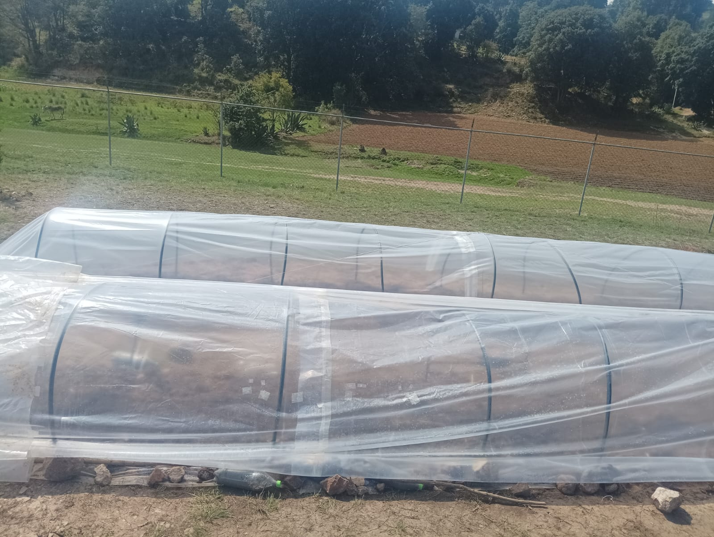
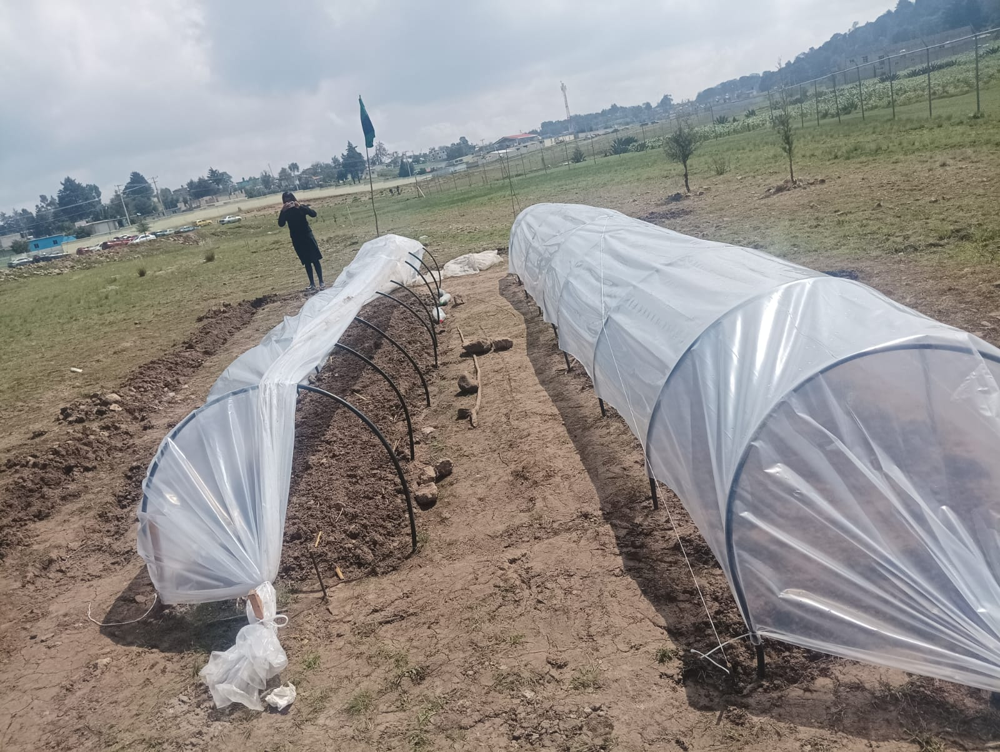

✅¿Que es un microtunel?
✅Utilidad del microtunel
¿Que es un microtunel?
Un microtúnel casero para invernadero es una estructura baja y alargada que se construye sobre el suelo para proteger cultivos pequeños o en etapa de crecimiento. Se le llama “microtúnel” porque tiene forma de túnel, pero de dimensiones reducidas, y su función principal es crear un ambiente más cálido y protegido para las plantas, similar al de un invernadero, pero a menor escala. Este tipo de estructura puede construirse fácilmente con herramientas caseras como pala, pico, mangueras flexibles, varillas, plástico transparente y cinta o cuerda.
El microtúnel es ideal para huertos familiares, pequeños productores o proyectos escolares, ya que permite iniciar la siembra antes de que las condiciones climáticas sean óptimas en el exterior. Además, es una solución económica y eficiente para quienes buscan mejorar el rendimiento de sus cultivos sin realizar una gran inversión.

Utilidad del microtunel
Su utilidad principal es resguardar los cultivos del frío, el viento, las heladas, la lluvia intensa y las plagas, favoreciendo un mejor desarrollo de las plantas, especialmente en climas fríos o temporadas inestables. También permite extender el tiempo de siembra y cosecha, lo que lo convierte en una herramienta valiosa para huertos familiares, escolares o proyectos agrícolas de pequeña escala.
Además de ser económico y fácil de hacer, un microtúnel casero se puede adaptar según el espacio disponible y las necesidades del cultivo. Es ideal para hortalizas como lechugas, zanahorias, espinacas, cebollas, entre otras.
En resumen, el microtúnel casero para invernadero es una solución práctica y accesible para proteger los cultivos, mejorar su rendimiento y cuidar el medio ambiente, todo con materiales simples y trabajo manual..
✅ Principales beneficios:
- Protección contra el frío y heladas
- Crea un microclima más cálido en el interior, lo que ayuda a que las plantas crezcan mejor en épocas frías
- Mayor humedad y temperatura estable:
- El plástico atrapa calor y vapor de agua, lo que mejora la germinación y el desarrollo de las plantas.
- Defensa contra plagas e insectos:
- Al cubrir los cultivos, se reduce la entrada de insectos dañinos y evita que se contaminen.
- Protección contra lluvias intensas o vientos fuertes:
- Evita que la lluvia dañe hojas o raíces, y que el viento rompa tallos o arrastre las plantas.
- Extensión del ciclo de cultivo
- Permite sembrar antes o cosechar después de la temporada normal, lo que es útil para aprovechar mejor el tiempo
- Económico y fácil de construir
- Se puede hacer con materiales baratos y herramientas sencillas como pala, pico, varilla y plástico.

Datos de contacto